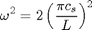
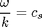

Contents
Determination of Driver Wave Amplitudes for Hydrodynamical Simulations of Pmodes in the Solar Atmosphere
The amplitude for the n m mode is given by.

http://solarwavetheory.blogspot.co.uk/search/label/solar%20global%20oscillations
The series for the normal modes are calculated from the following expressions for a given of the speed of sound c and a value for the length of the simulation box of 4Mm. The frequency is computed using

For the normal modes the wave numbers and frequencies satisfy the following relationship

% <html> % For sound speed 13km/s % <br /> % <br /> % <table border="1" style="width: 100%;"> % <tbody> % <tr> % <td>Mode</td> % <td>Driver Period (s)</td> % <td>Amplitude (m/s)</td> % <td>Label</td> % </tr> % <tr> % <td>(0,0)</td> % <td>435.1</td> % <td>500</td> % <td>spic_4p35_0_0_3d</td> % </tr> % <tr> % <td>(0,1)</td> % <td>307.7</td> % <td>183.8151</td> % <td>spicule3p07a_0_1_3d</td> % </tr> % <tr> % <td>(0,2)</td> % <td>205.1</td> % <td>137.9961</td> % <td>spicule2p05_0_2_3d</td> % </tr> % <tr> % <td>(0,3)</td> % <td>153.8</td> % <td>108.3381</td> % <td>spic_1p53_0_3_3d</td> % </tr> % </tbody></table> % <br /> %for 30, 180,300s drivers% %30s driver sound speed 188.6km/s % <br /> % <br /> % <table border="1" style="width: 100%;"> % <tbody> % <tr> % <td>Mode</td> % <td>Driver Period (s)</td> % <td>Amplitude (m/s)</td> % <td>Label</td> % </tr> % <tr> % <td>(0,0)</td> % <td>30.0</td> % <td>7366.1</td> % <td>spic4b0_3d</td> % </tr> % <tr> % <td>(0,1)</td> % <td>30.0</td> % <td>2946.4</td> % <td>spic4b0_1_3d</td> % </tr> % <tr> % <td>(0,2)</td> % <td>30.0</td> % <td>1473.2</td> % <td>spic4b0_2_3d</td> % </tr> % <tr> % <td>(0,3)</td> % <td>30.0</td> % <td>866.6</td> % <td>spic4b0_3_3d</td> % </tr> % </tbody></table> % <br /> % <br /> %180s driver sound speed 31.4km/s % <br /> % <br /> % <table border="1" style="width: 100%;"> % <tbody> % <tr> % <td>Mode</td> % <td>Driver Period (s)</td> % <td>Amplitude (m/s)</td> % <td>Label</td> % </tr> % <tr> % <td>(0,0)</td> % <td>180.0</td> % <td>1210.6</td> % <td>spic6b0_3d</td> % </tr> % <tr> % <td>(0,1)</td> % <td>180.0</td> % <td>484.234</td> % <td>spic6b0_1_3d</td> % </tr> % <tr> % <td>(0,2)</td> % <td>180.0</td> % <td>242.112</td> % <td>spic6b0_2_3d</td> % </tr> % <tr> % <td>(0,3)</td> % <td>180.0</td> % <td>142.42</td> % <td>spic6b0_3_3d</td> % </tr> % </tbody></table> % <br /> % <br /> %300s driver sound speed 18.9km/s % <br /> % <br /> % <table border="1" style="width: 100%;"> % <tbody> % <tr> % <td>Mode</td> % <td>Driver Period (s)</td> % <td>Amplitude (m/s)</td> % <td>Label</td> % </tr> % <tr> % <td>(0,0)</td> % <td>300.0</td> % <td>725.543</td> % <td>spic5b0_3d</td> % </tr> % <tr> % <td>(0,1)</td> % <td>300.0</td> % <td>290.217</td> % <td>spic5b0_1_3d</td> % </tr> % <tr> % <td>(0,2)</td> % <td>300.0</td> % <td>145.109</td> % <td>spic5b0_2_3d</td> % </tr> % <tr> % <td>(0,3)</td> % <td>300.0</td> % <td>85.358</td> % <td>spic5b0_3_3d</td> % </tr> % </tbody></table> % <br /> % <br /> % </html> function amplitude=pamplitude(n,m,t0,ti,a00) amplitude=2.*a00.*(2.*t0-1)./((2.*ti-1).*(n.^2+m.^2+2.*(n+m)+2) );
Error using pamplitude (line 219) Not enough input arguments.